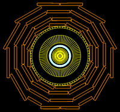
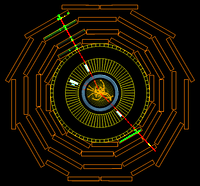
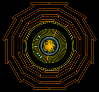
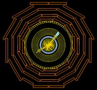

The Z particle can decay several ways. Four common decay modes are into pairs of particles: muons, electrons, taus and quarks. These pairs have the prefix "Di" for "two". The muons and electrons are detected directly whereas the two quarks quickly decay into two sprays of particles called jets. Taus decay as well and are detected from their decay products.
Three Z decay modes are shown in these events. The Ditau is excluded because it is harder to identify with the event displays provided here.
Click on the images below to learn more.
Detector Features in Event Display
 |
Dimuon ( Z → μ μ)

|
Dielectron ( Z → e e )
 | Dijet ( Z → jet jet)

|